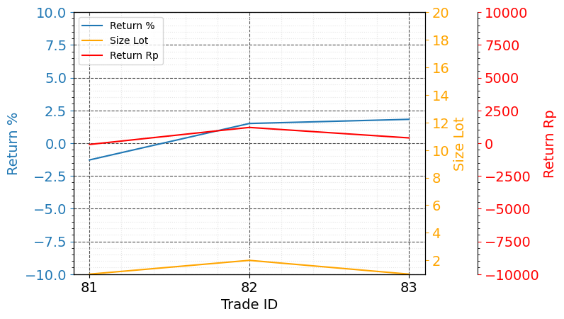
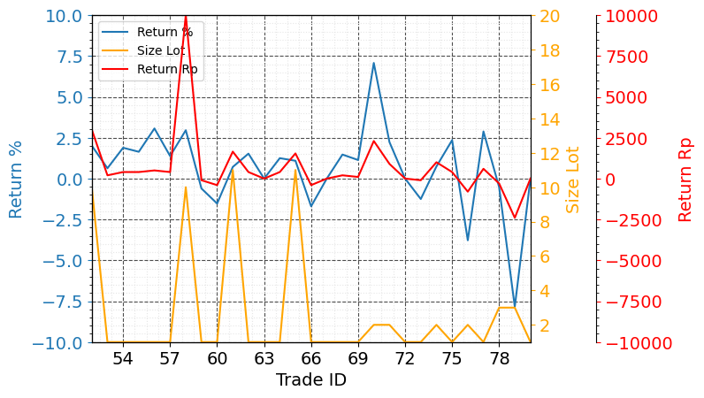

Scalping
Evaluasi Scalping 22 May 2023 - 26 May 2023
Statistik:
- Win Rate (%): 66.7
- Total Return (Rp): 1500
- Max Return (Rp): 1200
- Min Return (Rp): -100
- Total Return (%): 2.04
- Max Return (%): 1.82
- Min Return (%): -1.28
Win rate cukup baik 66.7% dan total net return adalah positif yaitu Rp. 1500.
Grafik:
Pada periode ini tidak ada kesalahan.
Evaluasi Scalping 26 Apr 2023 - 19 May 2023
Statistik:
- Win Rate (%): 62.1
- Total Return (Rp): 19890
- Max Return (Rp): 10000
- Min Return (Rp): -2400
- Total Return (%): 18.84
- Max Return (%): 7.08
- Min Return (%): -7.84
Win rate cukup baik 62.1% dan total net return adalah positif yaitu Rp. 19890.
Grafik:
Kesalahan yang perlu diperbaiki yaitu FOMO atau iseng masuk ke saham yang belum dikenali pola. Hal itu terjadi pada trade ID 79 dimana terkena loss dengan persentasi besar, akan tetapi dengan money management yang benar loss tersebut tidak menghasilkan kerugian yang mempengaruhi keseluruhan net profit periode ini. Perlu menahan diri dan bersyukur jangan over-trading.